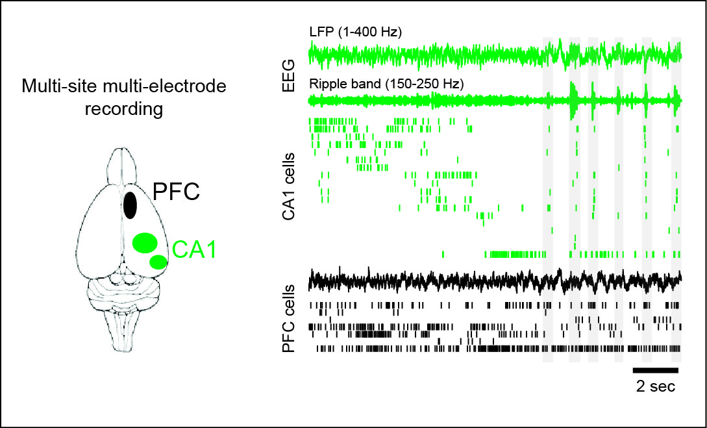

Research
Learning, Memory and Decision Making in the Mammalian Brain
The brain has a remarkable capacity to learn and to use past experience to guide our daily behavior. Multiple brain regions coordinate activity to form representations of the external world, learn new experiences, store and retrieve memories, and make decisions. We are interested in understanding the neural basis of these cognitive abilities by studying processing at the cellular and network level in the neuronal circuits of the rodent brain.
We are currently investigating how two critical brain regions, the hippocampus and the prefrontal cortex, interact and communicate with each other to support learning and memory, working memory and memory-guided decision making. The hippocampus is known to be critical for episodic memories, and the prefrontal cortex is involved in executive control, working memory and decision making. Communication between the prefrontal executive system and the hippocampal memory system is key for learning, remembering, planning, prediction and memory-guided decision making. However, the nature of communication between these two regions, and the neural mechanisms, fine timescale structure, and causal contributions of this pivotal interaction remain largely unknown. How does ensemble neural activity in these structures evolve during learning, what mechanisms underlie the organization and transmission of activity in ensembles of neurons across these structures, what role do network activity patterns seen in these structures such as theta, gamma and sharp-wave ripple oscillations play in local and inter-regional processing, and how do these patterns of activity relate to memory and decision making during ongoing behavior?
We address these questions using a combination of techniques, including behavior, large scale multielectrode recordings in awake behaving animals, real time detection and perturbation of neural activity patterns, targeted optogenetic interventions, and computational analysis. We have shown that hippocampal replay during awake sharp-wave ripples (SWRs) is critical for spatial memory, and SWRs are associated with coordinated reactivation of hippocampal-prefrontal neurons during memory-guided decision making. This approach thus allows us to characterize the neurophysiological basis of prefrontal-hippocampal interactions, and also to provide causal evidence linking specific forms of neural activity to behavior and cognition. This will provide crucial insight into several neurological and neuropsychiatric disorders involving these two regions, such as dementia, Alzheimers, depression and schizophrenia.

Figure caption: Simultaneously recorded EEG and spiking activity from neurons in the prefrontal cortex and CA1 region of the hippocampus during spatial learning. Shaded vertical bars denote sharp-wave ripples in the hippocampal EEG.